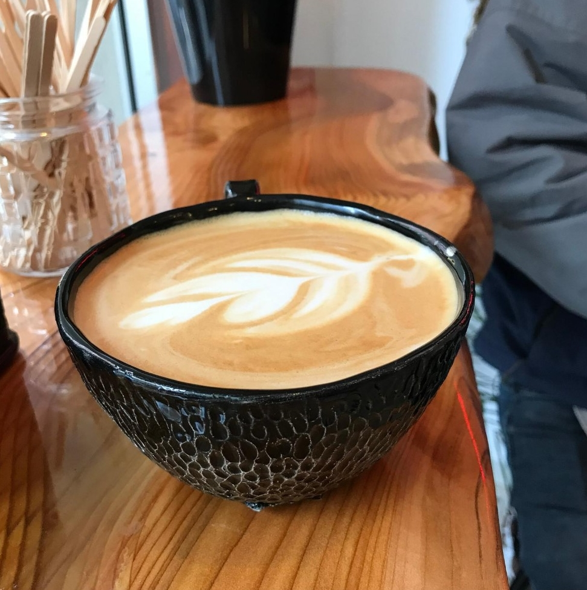

Sobre nosotros
Bosque Grow Cafe nació de un sueño de dos aficionados, luego de meses y meses de trabajo, pocas horas de sueño, dedos martillados, polvillo del taladro en los ojos, momentos de incertidumbre en el plano económico social del país y miles de factores más.Todo este esfuerzo día a día tiene su recompensa, ya que cada día que cerramos detrás del mostrador, lo sentimos como el primer día: una sensación de amor por lo que hacemos y orgullo a donde llegamos.
Es un proyecto en el cual dejamos todo nuestro corazón y nuestra energía, la felicidad que se ve en la foto es más elocuente que cualquier cosa que podamos escribir. Y nos llena de emoción poder decir que Bosque Cafe no es un simple cafe, es el resultado de todo nuestro amor, que crece día a día gracias a ustedes, nuestros clientes.


Sobre nuestro café
El ingrediente secreto de nuestro café es valorar la materia prima. El sabor, frescura, aroma floral con notas de caramelo, e intensidad hacen del café colombiano el elegido por nosotros. Si por algo se caracteriza nuestro café colombiando, es que ofrece una mayor acidez y suavidad, mejor calidad de la infusión, aroma intenso y menor concentración de cafeína, siendo la opción más saludable para el consumo de café.Pero este grano no es el único secreto para obtener un exquisito café. La base de todas nuestras bebidas es el café espresso: una bebida de origen italiano, que nos permite capturar, de los 4 sabores principales, la mayor cantidad de salado, dulce y ácido con el menor amargor posible. Ahí está el arte de una buena taza de café, en conocer tu grano, tus equipos y saber lo que estás buscando.